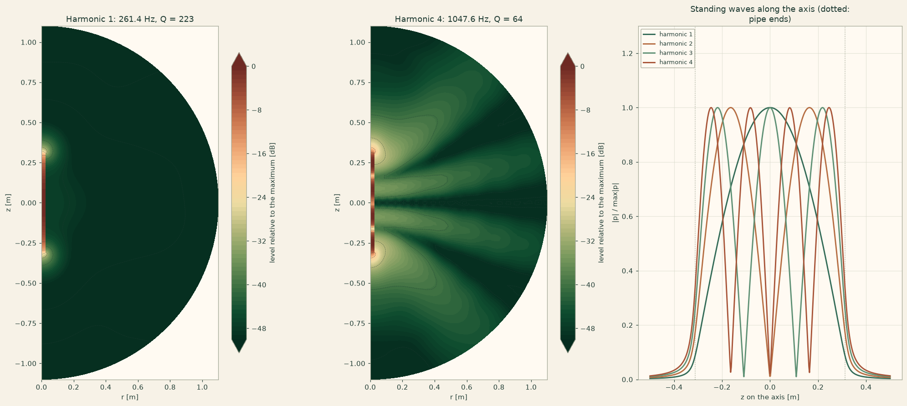
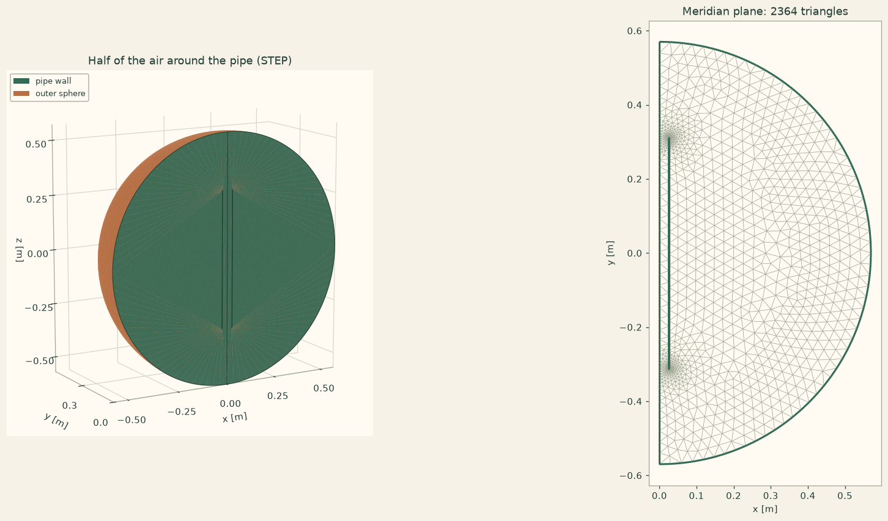

Docs › Examples › Tuning an open organ pipe
Pressure acoustics, complex eigenfrequencies · 2D-axisymmetric
Tuning an open organ pipe
An open flue pipe is cut to the length that the textbook end correction prescribes for middle C, and its radiating resonances are computed.
Run locally with OneSimulation. The example downloads are free. Running them requires an activated runtime. Runtime Alpha 0.2.1a8 · CPython 3.13 on macOS (Apple Silicon), Ubuntu 22.04 (x86-64), and Windows x64. Installation and activation · View pilot plans. Scope of the reference checks.


What it computes
OneSimulation reads the air in and around the thin-walled pipe from STEP files and solves the axisymmetric Helmholtz equation with quadratic elements; the frequency-dependent spherical-wave admittance makes the resonance problem nonlinear, and Beyn's contour-integral eigensolver returns the four lowest complex resonances with their pressure modes. A mesh study and two sphere sizes bound the numerical error. The script that builds the STEP file comes with the notebook.
What it checks
The fundamental sounds at 261.38 Hz, 1.2 cents below the design from Levine and Schwinger's end correction 0.6133 a (computed end correction 0.623 a for the 1 mm wall), the overtones lie within 2.2 cents of the harmonic series, the quality factors (223, 112, 79, 64) follow the low-frequency estimate n pi/(ka)^2 within 2 % to 17 %, and halving the mesh moves the pitch by at most 0.16 cents.
Geometry
Save the STEP files organ_pipe_tuning.step, organ_pipe_tuning_large.step next to the notebook before running it.


The geometry script
The script organ_pipe_tuning_geometry.py builds the geometry with the CAD objects of OneSimulation and writes the files. Change a dimension there, run it, and run the notebook again.
"""Geometry of the OneSimulation example "Tuning an open organ pipe".
Builds the air in and around an open cylindrical organ pipe - inner radius 25 mm, wall 1 mm, length
625 mm, tuned to middle C - inside a sphere of air, as half a solid of revolution about the z axis with
the CAD objects of OneSimulation. The sphere has a radius of 0.57 m in organ_pipe_tuning.step and of
1.1 m in organ_pipe_tuning_large.step; both name the faces pipe_wall and outer.
"""
import numpy as np
from onesim.cad.d2 import Path, Profile, Segment
from onesim.cad.d3 import Revolution
radius, wall, length = 0.025, 0.001, 0.625
half = dict(angle=np.pi)
tube = Revolution(
profile=Profile(
Path(
(radius, -length / 2),
(
Segment((radius + wall, -length / 2), name="pipe"),
Segment((radius + wall, length / 2), name="pipe"),
Segment((radius, length / 2), name="pipe"),
Segment((radius, -length / 2), name="pipe"),
),
)
),
**half,
)
for name, outer in (("organ_pipe_tuning", 0.57), ("organ_pipe_tuning_large", 1.1)):
sphere = Revolution(
profile=Profile(
Path(
(0.0, -outer),
(
Segment((outer, 0.0), center=(0.0, 0.0), name="outer"),
Segment((0.0, outer), center=(0.0, 0.0), name="outer"),
Segment((0.0, -outer), name="axis"),
),
)
),
**half,
)
air = sphere - tube
air = air.grouped(
pipe_wall=air.select(
faces=lambda face: face.kind != "sphere" and abs(face.center[0]) > 1e-6
)
)
air.save(f"{name}.step")The notebook
The complete notebook, cell by cell. Run it to produce the figures and the comparison printout.
An open flue pipe sounds at the resonances of the air column between its two open ends. An open end does not reflect at the end itself but a little beyond it: the air column is acoustically longer by the end correction \(\delta\) at each end, and its resonances are
Reference. H. Levine and J. Schwinger (Phys. Rev. 73, 383-406, 1948) solved the radiation from the open end of an unflanged thin-walled pipe of radius \(a\) exactly: at low frequency \(\delta=0.6133\,a\), and the end reflects with \(|R|\approx1-\tfrac12(ka)^2\). The energy that each reflection loses sets the quality factor of the resonances, \(Q_n\approx n\pi/(ka)^2\) for small \(ka\). To sound middle C (\(f_1=261.63\) Hz, \(c=343\) m/s) a pipe of radius 25 mm must therefore be cut to \(L=c/(2f_1)-2\cdot0.6133\,a=625\) mm.
The pipe (wall 1 mm thick) stands in a sphere of air. The field is axisymmetric and is solved in the meridian half-plane \((r,z)\).
| boundary | condition |
|---|---|
| pipe wall, inside, outside and its two rims | rigid, \(\partial p/\partial n=0\) |
| sphere of radius \(R\) | outgoing spherical wave, \(v_n=p\,(1+1/(ikR))/(\rho_0c)\) |
| axis \(r=0\) | regular |
The resonances of a radiating pipe are complex: \(p\propto e^{i\omega t}\) with \(\omega=\omega_r+i\omega_i\) decays at the rate \(\omega_i\), and \(Q=\omega_r/(2\omega_i)\). They are the frequencies at which the Helmholtz operator with its frequency-dependent radiation condition becomes singular - a nonlinear eigenvalue problem.
The spherical-wave condition is exact only for a monopole at the centre of the sphere; the two pipe ends sit off centre. Its residual reflection hardly moves the pitch but does change the weak radiation damping, so the sphere is taken at two sizes, 0.57 m and 1.1 m.
import numpy as np
from onesim.cad.exchange import load
from onesim.meshing import TriangularMesher
from onesim.numerics.fem import FiniteElement, Lagrange, RevolvedH1SpaceFactory
from onesim.numerics.linear import BeynContourEigenSolver, elliptic_contour_quadrature
from onesim.physics.acoustics import (
AcousticPressureSpectrum,
ComplexPressurePencil,
ConstantPressureForms,
PressureAdmittanceBoundary,
PressureTraceSamples,
SampledPressureAdmittanceForms,
SampledPressureVolumeForms,
pressure_space_volume_samples,
)
from onesim.visualization import plots, theme
theme.set()
c0, rho0 = 343.0, 1.204
impedance = rho0 * c0
radius, length, target = 0.025, 0.625, 261.63
harmonics = np.arange(1, 5)Geometry and mesh
Each STEP file holds half of a sphere of air with the pipe wall cut out, as a solid of revolution; section with the plane \(x=0\) returns the meridian half-plane with the wall as a thin slot. The triangles are 0.6 mm at the rims of the pipe and grow to 30 mm (a tenth of the shortest wavelength) far away; on the small sphere a second mesh halves all sizes.
airs = {
"R = 0.57 m": load("organ_pipe_tuning.step"),
"R = 1.1 m": load("organ_pipe_tuning_large.step"),
}
planes = {name: air.section((1, 0, 0)) for name, air in airs.items()}
rims = np.array([[radius + 0.0005, -length / 2], [radius + 0.0005, length / 2]])
cases = (("R = 0.57 m", 1.0), ("R = 0.57 m", 0.5), ("R = 1.1 m", 1.0))
meshes = {
(name, s): TriangularMesher(
target_size=0.03 * s,
size_field=lambda p, s=s: np.minimum(
0.03 * s,
s
* (
0.0006
+ 0.25 * np.min(np.linalg.norm(p[:, None, :2] - rims, axis=2), axis=1)
),
),
).generate(planes[name])
for name, s in cases
}
air = airs["R = 0.57 m"]
view = plots.Camera(elevation=12, azimuth=-120)
fig = plots.figure(1, 2, size=(15, 7))
plots.geometry(
air,
selection={
"pipe wall": air.boundaries.pipe_wall,
"outer sphere": air.boundaries.outer,
},
labels=False,
camera=view,
title="Half of the air around the pipe (STEP)",
ax=fig[0],
)
plots.mesh(
meshes["R = 0.57 m", 1.0],
groups=("all",),
legend=False,
title=f"Meridian plane: {meshes['R = 0.57 m', 1.0].cell_count} triangles",
ax=fig[1],
)
plots.show()Model
RevolvedH1SpaceFactory makes the quadratic Lagrange space axisymmetric (weights \(2\pi r\)); SampledPressureVolumeForms integrates the volume forms and the sphere carries the admittance \(Y(\omega)\), an analytic function of the complex frequency. AcousticPressureSpectrum with BeynContourEigenSolver integrates the resolvent of the ComplexPressurePencil around an ellipse in the complex frequency plane that encloses the first four harmonics (48 sparse factorisations) and returns the complex resonances inside it with their pressure modes.
admittance = lambda omega, outer: (1 + c0 / (1j * omega * outer)) / impedance
contour = elliptic_contour_quadrature(
2 * np.pi * 650.0, (2 * np.pi * 480.0, 2 * np.pi * 30.0), 48
)
def solve_pipe(name, level):
"""Complex resonances of the pipe in one sphere on one mesh."""
plane, mesh = planes[name], meshes[name, level]
space = FiniteElement(
element=Lagrange(order=2), provider=RevolvedH1SpaceFactory()
).bind_space(mesh)
volume = ConstantPressureForms(
*SampledPressureVolumeForms(
size=space.dof_count,
samples=lambda: pressure_space_volume_samples(space),
inverse_density=lambda omega, sample: 1 / rho0,
compressibility=lambda omega, sample: 1 / impedance / c0,
)(0.0)
)
surface = [
PressureTraceSamples(space.cell_dofs[owner], points, weights, basis)
for owner, points, weights, _, basis, _ in map(
space.trace_data, mesh.facets(plane.boundaries.outer)
)
]
trace = SampledPressureAdmittanceForms(
size=space.dof_count,
samples=lambda: iter(surface),
admittance=lambda omega, sample: 1.0,
)(0.0)
pencil = ComplexPressurePencil(
volume,
boundary=PressureAdmittanceBoundary(
lambda omega: admittance(omega, plane.size[0]) * trace
),
)
probe = np.random.default_rng(3).standard_normal((space.dof_count, 8))
modes = AcousticPressureSpectrum(
operator=pencil,
eigensolver=BeynContourEigenSolver(contour=contour, probe=probe),
).run()
order = np.argsort(modes.angular_frequencies.real)
return dict(
space=space,
mesh=mesh,
dofs=space.dof_count,
omega=modes.angular_frequencies[order],
modes=modes.pressure_modes[:, order],
)
runs = {case: solve_pipe(*case) for case in cases}Results
Each computed resonance is matched with the nearest harmonic \(n\) of the design formula; the pitch error is given in cents (1200 cents to the octave).
design = harmonics * c0 / (2 * (length + 2 * 0.6133 * radius))
ka = 2 * np.pi * design / c0 * radius
for (name, level), run in runs.items():
print(
f"sphere {name}, mesh {level}: {run['dofs']} unknowns, {len(run['omega'])} resonances inside the contour: "
+ ", ".join(
f"{w.real / (2 * np.pi):.2f}{w.imag / (2 * np.pi):+.3f}i Hz"
for w in run["omega"]
)
)
final = cases[-1]
fine = runs[final]
picked = {
case: run["omega"][
[np.argmin(np.abs(run["omega"].real / (2 * np.pi) - f)) for f in design]
]
for case, run in runs.items()
}
frequency, quality = picked[final].real / (2 * np.pi), picked[final].real / (
2 * picked[final].imag
)
print(f"\nsphere {final[0]}:")
print(
"\n n design [Hz] computed [Hz] pitch error [cents] end correction delta/a Q computed Q = n pi/(ka)^2"
)
for n, f_design, f, q, value in zip(harmonics, design, frequency, quality, ka):
print(
f"{n:2d} {f_design:10.2f} {f:12.2f} {1200 * np.log2(f / f_design):+12.1f} "
f"{(n * c0 / (2 * f) - length) / (2 * radius):16.4f} {q:14.1f} {n * np.pi / value**2:12.1f}"
)
print(
f"fundamental against the target pitch C4 = {target} Hz: {1200 * np.log2(frequency[0] / target):+.1f} cents"
)
change = lambda a, b: (
np.max(np.abs(1200 * np.log2(picked[a].real / picked[b].real))),
np.max(np.abs(picked[a].imag / picked[b].imag - 1)),
)
print(
"halving the mesh (small sphere): pitch changes by at most {:.2f} cents, Q by {:.1e}".format(
*change(cases[1], cases[0])
)
)
print(
"enlarging the sphere (coarse mesh): pitch changes by at most {:.2f} cents, Q by {:.1e}".format(
*change(cases[2], cases[0])
)
)Figure
The pressure level of the fundamental and of the fourth harmonic in the meridian plane, relative to its maximum: the standing wave fills the pipe, and from its two ends the much weaker waves that carry the sound away spread into the room. Right: the pressure along the axis for the four harmonics.
x, z = np.asarray(fine["mesh"].coordinates).T
axis = np.column_stack((np.zeros(400), np.linspace(-0.5, 0.5, 400)))
shapes = {}
for n in harmonics:
column = np.argmin(np.abs(fine["omega"] - picked[final][n - 1]))
values = np.asarray(
fine["space"].evaluate(
fine["modes"][:, column], np.vstack((fine["mesh"].coordinates, axis))
)
)
values = values / values[np.argmax(np.abs(values))]
shapes[n] = values
fig = plots.figure(1, 3, size=(19, 8))
for panel, n in zip((fig[0], fig[1]), (1, 4)):
plots.heatmap(
x,
z,
20 * np.log10(np.abs(shapes[n][: len(x)]) + 1e-12),
triangles=np.asarray(fine["mesh"].cells),
limits=(-50, 0),
contours=10,
label="level relative to the maximum [dB]",
xlabel="r [m]",
ylabel="z [m]",
title=f"Harmonic {n}: {frequency[n - 1]:.1f} Hz, Q = {quality[n - 1]:.0f}",
ax=panel,
)
plots.line(
axis[:, 1],
{f"harmonic {n}": np.abs(shapes[n][len(x) :]) for n in harmonics},
vlines=[-length / 2, length / 2],
xlabel="z on the axis [m]",
ylabel="|p| / max|p|",
title="Standing waves along the axis (dotted: pipe ends)",
ylimits=(0, 1.3),
legend="upper left",
ax=fig[2],
)
plots.show()Going further
Make the pipe wider in organ_pipe_tuning_geometry.py and write the STEP file again: the end correction grows with the radius, the pipe must be cut shorter for the same pitch, and the overtones drift sharp faster because \(\delta\) shrinks as \(ka\) grows - one reason why wide flue pipes sound duller. A flanged end (a disc around the opening) raises \(\delta\) towards \(0.82\,a\).